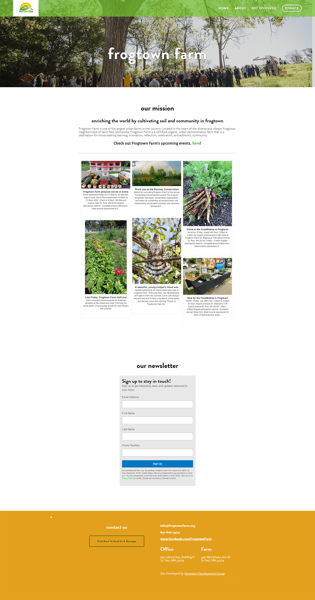

Frogtown Farm
Role
Front End Development
Frogtown Farm, an urban farm located in St. Paul Minneapolis, approached us to make a new website for them. Getting inspiration from their mission and colors I cutomize the frontend of the squarespace theme.
The newly finished site is simple and easy to use. Using CSS Media Queries, the website structure is fully responsive, and compatible on a number of platforms.
